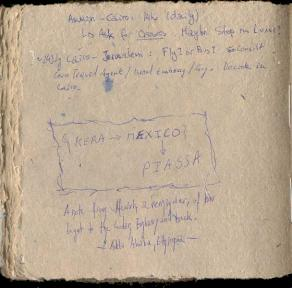

|
|
|
|
|  |
Afework was relatively sharp. He arrived at about 8.30, took a shower in my room, since he does not have hot water, and off we went to exchange money and to the Sudanese Embassy. It was a trip to get to the Embassy since neither of us knew where it was. But Afework estimated it would take 20 minutes to get there, but in fact it took us about one hour. It was a hard walk for me also if it was all downhill, and we took the wrong left turn twice. But we eventually managed to get there, and as we were walking toward what seemed to be be a reception office, a gray haired man approached us and asked us what we needed. I said a tourist VISA. "What nationality?" "US." "You need a letter of recommendation from your embassy". And as he said that he was about to leave. I was not satisfied with this answer, and started to do what he most disliked: I bombarded him with more questions like a machine:
He was very annoyed, but to my surprise, he answered all the question.
On the way out Afework was pointing out that I was being a little rude, but I didn't really care. After all, if they don't give me a VISA, it will mean I will have to skip Sudan, which in a way is good, as it will make my trip a little easier and shorter.
At this point I was really hungry, so Afework took me to the Sunrise Restaurant, which is owned, apparently by an Ethio-Italian lady, whom I have not met. The place looks like an Italian villa, with a little garden with tables and a gazebo outside, but not dustbins. We sat down and had some marvelous fruit salad (which was listed under "juices" in the menu, which made me think they were making/preparing a juice of mixed fruits) and avocado/papaya juice. Very good food. I strongly suggest if anyone happens to be in Addis.
Our next goal was the American Embassy. To do so we needed to use local transportation. Now, you need to know first how local transport here works. There are 4 main types of transportation. The city bus, which is the cheapest, looks a lot like the Italian city buses, but is not advisable. Not only could it be dangerous, but there is no map or routes of where they go. There is only a Gregorian calendar that locals have, which has on the back a list of where the bus numbers go and start from, but not in a graphical form. And in Amharic too. Then there are the white and blue taxis which work pretty much like buses, but they are either minivans or cars, and they start from place A and go to B, and they shout out where they are going. One has to know therefore where to go, and where the taxis that go there leave from. You can also hire one of these blue and white taxis privately as a regular taxi, but the trip can cost you up to 40 birr if you cross the whole city, while if you take them in Bus Mode it will not cost you more that 1.4 birr, but you will have to wait until it is full. Then there are the yellow taxis that primarily serve the airport-Hilton-Sheraton lines and charge Western prices.
We wanted to make sure that the embassy was actually open, so we stopped by the telecommunications building to call them and find out. That was quite interesting, as inside they were not able to find the phone number in the phone book (latest edition of 88/89). Then they told us to dial 97 for information. And Afework managed to go through the line and call, but there was no answer. Maybe out for lunch? Then back inside, he was inquiring in Amharic, which saved lots of time. Eventually, we looked ad the phone book again (in Amharic) and found the number to be 550-666. We called. They were open so we went.
So we took the minibus taxi in bus-mode to the Piassa, then had to find where the other minibusses to Shromeda left. Once we found them, we could head toward the US Embassy.
At the embassy Afework stayed out. I went in, and had to take everything off for security. The security lady laughed when she saw the visor keyboard. Then I went in. There was a big hall filled with Ethiopian. Maybe 50-60 sitting on chairs facing a TV. 10 teller windows, and the last one said "US Citizen's services". There I was told that the embassy does not give letters of recommendation, but they gave me a letter that explained this. A pretty interesting gone, as it talks about how the US government does not forbid any carrier of US passport to travel in countries around the world, so there is no need to issue such a letter. There is also a small section where the embassy encourages the other nations to not request such letters any more for US citizens.... Pretty interesting.
So that didn't take too long. Afework was waiting for me outside, and then we took the taxi/bus back to the Piassa and walked to Baro Hotel. When we got back, we said hi to a Dutch lady, and told her we would go quickly to the post office. ,The ideas was to ship the Bao game so it would not weigh, so I could travel lighter. The post office near by said we needed to go to the main one.
The main post office (mind you, we had to get there first, and I was feeling sick) told us, after selling us a box for 6.65birr, that what I was trying to ship was some artifact that needed permission from the museum to leave the country. So stupid us, we actually went to the museum, on the other side of town, Arat-kilo (4 kilos). there, the lady that was supposed to do the paperwork was not in and they told me to come back tomorrow. But Afework ran into a friend of his, and another lady said that in fact the lady in charge was out for tee and I could have asked her if I waited a while. So we waited for about 30 minutes, and when she came , she looked at the item, and after me telling the story, she said she could not help me because the item was not Ethiopian. Now, I knew about something like this, but I had forgotten about it. Any ways, at this point there is nothing to do but to carry it to the next nation.
Afework was very disappointed with the bureaucracy, but we headed home. Afework suggested a shortcut. Which took forever, according to me since I was not feeling too well. On the way back we stopped to buy some bread and water, then headed straight home.
The evening was short after that. I got fever that night. I was up for too long moving and my health was not doing better. I took some aspirin and went to bed.
| Previous | Home | Next |
{kind=link}